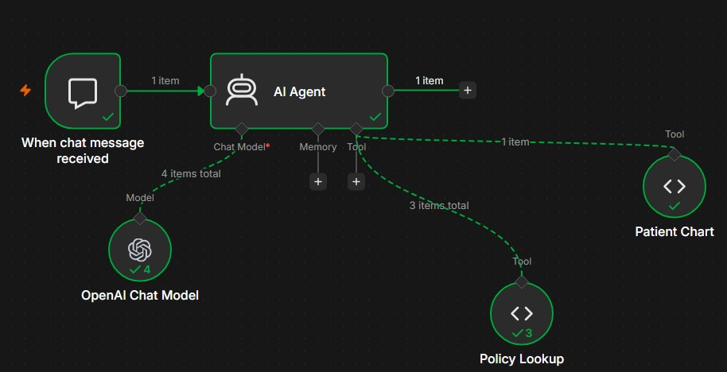
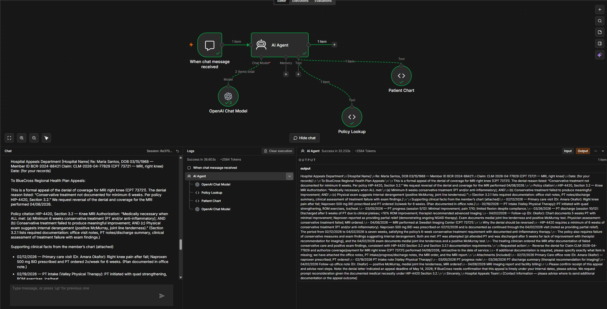
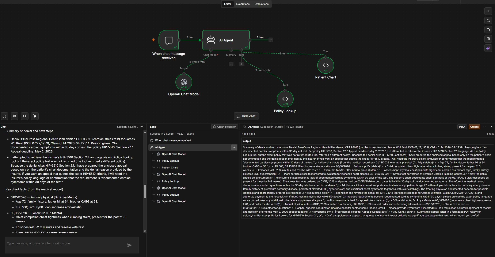
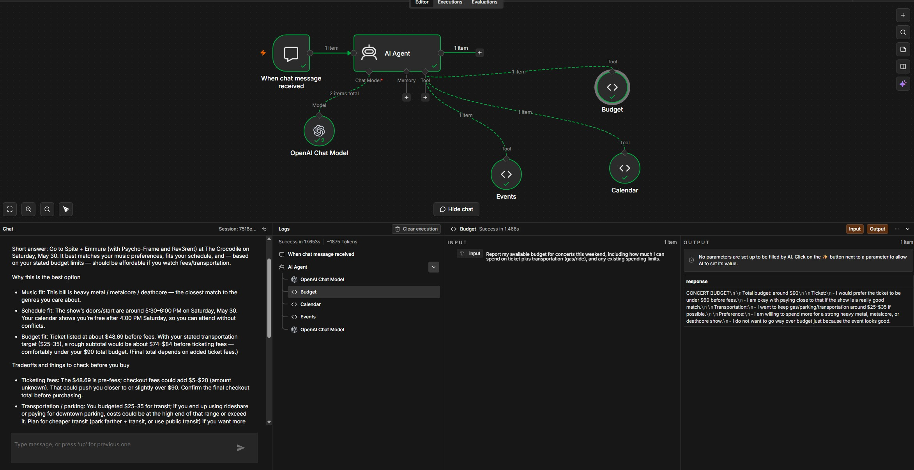

Introduction: What I Built
For this lab, I built and tested two AI agents in n8n. The first was an AI Insurance Advocate that reviewed insurance denial information, used tools to look up patient chart evidence and policy requirements, and drafted appeal letters. The second was a personal Concert Weekend Agent that used budget, calendar, and event tools to recommend a rock or heavy metal show in Seattle.
The main thing I learned is that agentic AI is useful because it can connect multiple tools and complete a multi-step workflow. At the same time, it is only as reliable as the tools, data, and guardrails it has access to. In healthcare especially, the agent should help with drafting and evidence-finding, but the final decision should still stay with a human reviewer.
What Agentic AI Means
Question
Think about a multi-step task you do regularly. How would a Level 2 agent handle it vs. a Level 3 agent? Where would you still want to stay in the loop?
A multi-step task I do regularly is coming up with side projects that involve web development, application development, or automation. A Level 2 agent could help with this, but I would still have to guide it step by step. For example, I could ask it to brainstorm project ideas, compare which idea is more realistic, create a feature list, suggest a tech stack, and help debug code. The AI would be useful, but I would still be deciding what comes next and how each step connects.
A Level 3 agent would be more independent. Instead of asking for each task one at a time, I could give it a broader goal like, "Help me turn this side project idea into a working prototype." From there, the agent could break the project into smaller tasks, identify the main user problem, suggest features, choose a reasonable tech stack, create a project plan, write starter code, test parts of the workflow, and point out what still needs to be fixed. This connects to the agent loop because the agent is not just answering one prompt. It is observing the goal, deciding what step should come next, acting on that step, and adjusting based on the result.
I would still want to stay in the loop for the main product decisions. I would want to approve the project idea, the most important features, the design direction, and whether the prototype actually solves the problem I started with. The agent can speed up the planning and building process, but it should not fully decide what the project becomes. This matters because side projects are not only technical tasks. They also require judgment about what is useful, realistic, and worth building.
AI Insurance Advocate Workflow
The AI Insurance Advocate was built in n8n to take an insurance denial, look up the relevant policy, search the patient chart, and draft an appeal letter for human review. The workflow JSON confirmed these main components:
- Chat Trigger
- AI Agent
- OpenAI Chat Model
- Policy Lookup tool
- Patient Chart tool
This makes it agentic because the AI Agent was not just answering one prompt. It decided which tools to call, used the tool results, and created an appeal draft for human review.

Maria Santos Case
Question
Check the logs. The AI Insurance Advocate decided which tools to call and in what order. Did it follow the workflow you expected, or did it do something different? Was that smart or a mistake?
In Step 2, the AI Insurance Advocate called the tools in the order Policy Lookup -> Patient Chart. At first, I expected it to check the patient chart first, but the order it used made sense. The denial was based on BlueCross policy HIP-4420 Section 3.2, so the agent first needed to understand the exact policy requirements. Then it searched the patient chart for evidence that matched those requirements.
The strongest part of the output was that the agent did not just write a general appeal saying the MRI was necessary. It connected the chart evidence directly to the denial reason. The denial said conservative treatment was not documented for at least 6 weeks, but the agent found that Maria Santos was prescribed naproxen on 02/12/2026 and was still using it at the 04/02/2026 follow-up. It also used PT notes from 02/19/2026, 03/05/2026, and 03/26/2026 to show limited improvement, continued pain, and a recommendation for advanced imaging. Then it connected the 04/02/2026 exam findings, including a positive McMurray test and medial joint line tenderness, to the policy requirement for internal derangement.
This was a smart tool order because the agent needed both sources to make the appeal convincing. The policy showed what BlueCross required, and the chart showed whether Maria met those requirements. If the agent only used the chart, it could explain her knee injury but might not prove that she met the insurance criteria. If it only used the policy, it would know the rule but would not have the patient-specific facts needed to challenge the denial.
I would still want a human in the loop before sending the appeal. The agent's draft was useful, but healthcare appeals have real patient and financial consequences. A human reviewer should confirm that the dates are correct, the records are actually attached, and the letter does not claim anything beyond what is documented in the chart. This connects to the prediction-decision gap because the agent can draft a strong appeal, but the draft is not the final decision. The AI can gather evidence and recommend that the denial should be challenged, but a human still needs to decide whether the appeal is accurate enough to submit.
Maria Santos tool log
Main evidence found
- Naproxen started on 02/12/2026 and continued through follow-up.
- PT notes showed limited improvement and continued pain.
- 04/02/2026 exam showed medial joint line tenderness and positive McMurray test.
Maria Santos appeal output
To: BlueCross Regional Health Plan - Medical Review/Appeals
Re: Appeal of Denial - Maria Santos, DOB 03/15/1968, Member ID BCR-2024-88421
Claim: CLM-2026-04-77829 (CPT 73721 - MRI, right knee)
Denial reason cited: "Conservative treatment not documented for minimum 6 weeks. Per policy HIP-4420, Section 3.2."
Summary request: Please reverse the denial and authorize payment for CPT 73721. Submitted documentation demonstrates that the medical necessity criteria in HIP-4420 Section 3.2 were met prior to ordering and performing the MRI.
Policy language: HIP-4420 Section 3.2 says MRI of the knee is medically necessary when all are met: minimum 6 weeks conservative treatment, conservative treatment failed to produce meaningful improvement, and physical exam suggests internal derangement.
- 02/12/2026 - Primary care visit: right knee pain after fall; Naproxen 500 mg BID prescribed and PT ordered.
- 02/19/2026 - PT intake: PT initiated.
- 03/05/2026 - PT progress: minimal improvement, pain 7/10, limited flexion despite compliance.
- 03/26/2026 - PT discharge: 5 weeks PT, less than 10% ROM improvement, pain 6-7/10, plateau, advanced imaging recommended.
- 04/02/2026 - Follow-up: 5 weeks PT with minimal improvement, naproxen partial relief, conservative treatment failed, medial joint line tenderness, positive McMurray test, MRI ordered.
- 04/08/2026 - MRI performed.
Conclusion: The chart evidence supports that Maria met the conservative treatment requirement through ongoing naproxen therapy and documented PT. The record also documents treatment failure and exam findings consistent with internal derangement. The appeal requested that BlueCross overturn the denial and authorize payment for CPT 73721.

Breaking the Advocate
Question
The agent did not hallucinate because we told it not to. But not every AI system has that guardrail. Pick a high-stakes field outside healthcare. If someone deployed an agent without that instruction, what could go wrong and who gets harmed?
A high-stakes field outside healthcare where this could go wrong is finance, especially loan approval or investment advising. If a financial AI agent was deployed without a clear instruction to avoid making up facts, it could create a professional-looking recommendation based on missing or unverified information. For example, if the agent did not have access to a customer's full income history, debt information, credit file, or risk profile, it might still write a confident loan recommendation or investment plan instead of stopping and asking for the missing data.
The main risk is that the output could look accurate even when it is not. A loan agent might claim that a borrower has stable income or a low debt-to-income ratio when that was never verified. An investment agent might recommend a risky portfolio to someone who cannot afford that level of risk because it guessed from incomplete data. The customer would be harmed first because they could be denied unfairly, approved for debt they cannot manage, or pushed into investments that do not fit their situation. The company would also be harmed because bad recommendations could create regulatory problems, lawsuits, and loss of trust.
This connects back to the AI Insurance Advocate because the system prompt and tool access are what made the agent safer. When the Patient Chart tool was removed, the agent was supposed to stop and ask for information instead of inventing medical evidence. That is the right failure mode. In finance, the same rule matters. If the agent does not have enough verified information, it should say what is missing and escalate to a human. It should not fill in the gaps just to finish the task. The business lesson is that agentic AI can save time, but only if it is designed to fail safely when its data or tools are incomplete.
James Whitfield Case
Question
The denial says James had no cardiac symptoms in the past 30 days. Look at his chart. Is the denial correct? What evidence would you cite? Did the AI Insurance Advocate find the same evidence you did?
For James Whitfield, the denial said there were no documented cardiac symptoms within 30 days of the cardiac stress test. Based on the chart, I do not think that denial is correct. James had a follow-up visit with Dr. Priya Mehta on 03/18/2026 where he reported chest tightness while climbing stairs for the past 2 to 3 weeks. His stress test was performed on 03/25/2026, which was only 7 days after that visit. This shows that cardiac symptoms were documented within the 30-day window.
The evidence I would cite is the 03/18/2026 follow-up note because it directly challenges the reason for the denial. That note documents chest tightness with exertion, episodes lasting 2 to 3 minutes, and symptoms that went away with rest. It also shows that James had several cardiac risk factors, including age over 70, elevated LDL, high blood pressure, and family history of heart disease. The provider assessed him as having atypical chest pain with significant cardiac risk factors and ordered the stress test to rule out ischemic heart disease. The risk factors matter, but the most important evidence is still the chest tightness because the denial was specifically about missing symptoms within 30 days.
The AI Insurance Advocate found the same main evidence I did. It identified the 03/18/2026 visit, the chest tightness, and the 03/25/2026 stress test date. The logs showed the tool order was Policy Lookup -> Patient Chart -> Policy Lookup. That order made sense because the agent tried to check the policy first, then compare the policy to the chart, then check the policy again. The issue was that the Policy Lookup tool did not return HIP-5510 Section 2.1 for cardiac stress tests. Instead of making up the policy language, the agent explained that it was using the chart and the denial reason only.
This shows both the benefit and the limitation of agentic AI. The agent was useful because it quickly found the main contradiction in the denial. The denial said there were no symptoms, but the chart showed chest tightness 7 days before the test. At the same time, the agent could not fully verify the appeal because the correct policy was missing. This matters because an agent can only be as reliable as the tools and data it has access to. A human reviewer should still confirm the HIP-5510 policy language before submitting the appeal.
James Whitfield tool log
Why the denial should be challenged
The denial said there were no documented cardiac symptoms within 30 days. The chart documented chest tightness on 03/18/2026, and the stress test was performed on 03/25/2026. Both dates fall within the 30-day window.
James Whitfield output
Summary of denial and next steps: BlueCross Regional Health Plan denied CPT 93015, cardiac stress test, for James Whitfield, DOB 07/22/1953, Claim CLM-2026-04-22314. The reason given was "No documented cardiac symptoms within 30 days of test. Per policy HIP-5510, Section 2.1."
The agent attempted to retrieve HIP-5510 Section 2.1 through Policy Lookup, but the exact policy text was not returned. Because the denial cited HIP-5510 Section 2.1, the agent prepared the appeal based only on the chart documentation and the denial reason.
- 01/15/2026 - Annual physical: age 72, family history of heart disease, LDL 168, BP 138/88.
- 03/18/2026 - Follow-up: chest tightness when climbing stairs for 2-3 weeks, episodes lasting 2-3 minutes and resolving with rest, BP 142/90, normal sinus rhythm on EKG, assessment of atypical chest pain with significant cardiac risk factors.
- 03/25/2026 - Stress test performed at Swedish Cardiac Imaging Center.

Auditing the Output
Question
Did you find any errors, hallucinations, or missing information in the appeal letter? If your hospital processed 500 of these per month, is this kind of line-by-line audit realistic? What would you propose instead?
After auditing the Maria Santos appeal letter, I did not find any major factual errors or clinical hallucinations. I checked the dates, treatment history, clinical findings, and policy references against the patient chart and HIP-4420 Section 3.2. The letter correctly stated that naproxen was prescribed on 02/12/2026 and was still being used at the 04/02/2026 follow-up. That supports the argument that Maria had more than 6 weeks of anti-inflammatory treatment before the MRI was performed.
The appeal also matched the PT records. It used the 02/19/2026 PT intake, the 03/05/2026 progress note, and the 03/26/2026 discharge note to show limited improvement, continued pain, and a recommendation for advanced imaging. The clinical findings also matched the chart. The letter cited pain levels of 6 to 7/10, less than 10% ROM improvement, medial joint line tenderness, and a positive McMurray test. These details matter because HIP-4420 Section 3.2 requires conservative treatment, failure to improve, and physical exam findings that suggest internal derangement.
The main issue I found was not a clinical hallucination, but it still matters. The letter said supporting records were attached, including office visit notes, PT records, the MRI order, and imaging confirmation. In the lab, the agent did not actually attach those documents. It only listed what should be attached. In a real hospital, that would need to be checked before submission because missing attachments could delay the appeal or weaken the case.
If the hospital processed 500 appeals per month, a full line-by-line audit for every letter would not be realistic. It would take too much time and would remove part of the benefit of using the agent. Instead, I would use a risk-based audit system. Every appeal should still need human approval, but low-risk appeals with clear source evidence and matching policy language could get a shorter checklist review. Higher-risk cases, missing tool outputs, missing attachments, unusual policy codes, or appeals where the agent says information is incomplete should get a full manual review. The system should also track error types, missing documentation, wrong policy citations, and appeal success rate so the hospital can see whether the agent is actually improving the process.
AI Governance
Question
Write your governance brief for the AI Insurance Advocate using the five layers. Which layer would be hardest to get right at scale, and why?
Purpose and scope
The AI Insurance Advocate should only be used to draft appeal letters for denied insurance claims by comparing the denial reason, patient chart evidence, and insurance policy criteria. It should not submit appeals by itself, contact patients, make clinical recommendations, or decide medical necessity without human review.
Data access and privacy
The agent should only access the chart information needed for the appeal, such as visit notes, treatment history, exam findings, imaging orders, and policy documents. It should not have open access to the full patient record if that information is not relevant to the denial, and access should be logged and limited by role.
Human oversight design
A human reviewer should approve every appeal before it is submitted because the agent could cite the wrong policy, miss required attachments, or overstate chart evidence. Low-risk appeals with clear source evidence could use a shorter checklist review, but high-risk cases should get a full manual review.
Testing, auditing, and accountability
The hospital should regularly audit appeal letters and track errors such as wrong policy citations, missing documentation, hallucinated facts, and appeal success rate. If a factual error is submitted, the hospital and reviewer are still accountable because the agent is part of the workflow, not the final decision-maker.
Monitoring and sunset
The agent should be monitored over time to see whether its accuracy, missing documentation rate, or appeal success rate gets worse. If it starts citing outdated policies, missing new denial patterns, or needing more corrections during review, the workflow should be paused and fixed before it keeps producing letters.
Hardest layer at scale
The hardest layer to get right would be human oversight design. It is easy to say that a human should review everything, but that becomes harder if the hospital is processing 500 appeals per month. The hospital would need a review process that saves time without turning human approval into a rubber stamp.
Should We Be Using AI Agents for This?
The concern that matters most to me is errors at scale. The AI Insurance Advocate worked well in the Maria Santos case, but the James Whitfield case showed how quickly the workflow can run into a limitation when the correct policy is missing. In a small lab, that is easy to catch because I can read the output and compare it to the chart. In a real hospital, if the agent handled hundreds or thousands of denials per month, even a small error rate could affect a lot of patients.
I think the benefits can outweigh the risks, but only if the agent is used as a drafting and evidence-finding tool, not as an automatic appeal system. The benefit is that appeals take time, and many denials may not get challenged because staff do not have enough time to review every case. If the agent can help find chart evidence and draft appeals faster, it could help more patients get coverage for care they may qualify for. The risk is that a polished appeal letter can create false confidence. If the agent cites the wrong policy, misses a chart note, or says documents are attached when they are not, it could hurt the patient's chance of getting the denial overturned.
This source-citation checklist would include visit dates, PT notes, exam findings, medication records, or policy sections. If a claim does not have a source, the system should flag it and prevent the appeal from being submitted until a human reviewer checks it.
This guardrail keeps the human-in-the-loop meaningful. The reviewer would not just read a professional-looking letter and assume it is correct. They would check whether the agent's claims actually match the evidence. This matters because healthcare appeals are not just about saving time. They affect patient coverage, hospital reimbursement, and trust in the system. AI agents can be useful in this workflow, but only if they make the evidence easier to verify instead of harder to question.
Concert Weekend Agent
For Step 8, I built a Concert Weekend Agent to help decide whether I should go to a rock or heavy metal show in Seattle. The workflow JSON confirmed that the agent used three tools:
- Budget
- Calendar
- Events
The test prompt asked what I should do this weekend if I wanted to see a rock or heavy metal show while still staying within my schedule and budget. The agent recommended the Spite, Emmure, Psycho-Frame, and Rev3rent show at The Crocodile on Saturday, May 30, 2026.
The agent called the tools in the order Budget -> Calendar -> Events. At first, I expected it to check Events first, but the order still made sense. Since my prompt included budget and schedule limits, the agent checked how much I could spend, then checked when I was free, and then compared that information to the concert options. The recommendation was reasonable because the Spite and Emmure show was the strongest match for heavy metal, metalcore, and deathcore. It also fit my calendar because I was free after 4:00pm, and the show started around 5:30 to 6:00pm. The ticket was about $48.69 before fees, which fit my goal of staying under $60 before added costs.
I would not let this agent run completely unsupervised yet, even though the task is low stakes. A bad recommendation would not be dangerous, but it could still waste money or time if the ticket price, event details, or calendar information were outdated. The output was useful because it did not just pick a concert. It also explained the tradeoffs, including ticket fees, gas, parking, and how those costs could push the total closer to my $90 budget.
Before I trusted this agent more, it would need to prove that it can consistently use the right tools, avoid making up events or prices, and update its recommendation when my schedule or budget changes. I would want to test it over several weekends and compare its recommendations against actual ticket prices, event availability, and my real calendar. For a personal planning agent like this, I would probably trust it after a few successful uses because the consequences are limited.
This is different from how hospitals should evaluate agents like Epic's Penny. If my concert agent makes a mistake, the main risk is choosing the wrong event or spending more than I planned. In healthcare, an agent can affect patient care, billing, appeals, and access to treatment. Hospitals need a much higher trust standard before using agents in real workflows. They would need longer testing, audit logs, source citations, human approval, privacy controls, and clear rules for when the agent should stop and escalate to a person. This shows that the level of oversight should depend on how serious the consequences are.
Concert Weekend Agent output
Recommendation: Go to the Spite / Emmure show at The Crocodile on Saturday, May 30, 2026.
Why: Best genre match: the bill, Spite, Emmure, Psycho-Frame, and Rev3rent, is explicitly heavy metal, metalcore, and deathcore.
Schedule fit: The calendar shows I am free Saturday after 4:00pm, and the show's doors/start are around 5:30 to 6:00pm, so there is time to get there.
Budget fit: The ticket price is about $48.69 before fees, which is within the ticket preference of under $60. With transportation around $25 to $35, the total should fit inside the $90 budget.
Tradeoffs: Ticket fees could push the final price closer to or above the $60 soft cap. Transportation and parking could also increase the total cost. Backup options included Land of Wolves at Chop Suey or a smaller local rock show, but those were weaker matches for the music preference.
Concert tool order

Final Takeaways
- Agentic AI is useful because it can connect multiple tools and produce a complete first draft or recommendation.
- Tool quality matters because missing or incorrect tools limit the agent's answer.
- Human review still matters, especially in high-stakes workflows like healthcare appeals.
- Low-stakes agents can be trusted faster, but healthcare agents need stronger testing, governance, audit logs, source citations, privacy controls, and escalation rules.